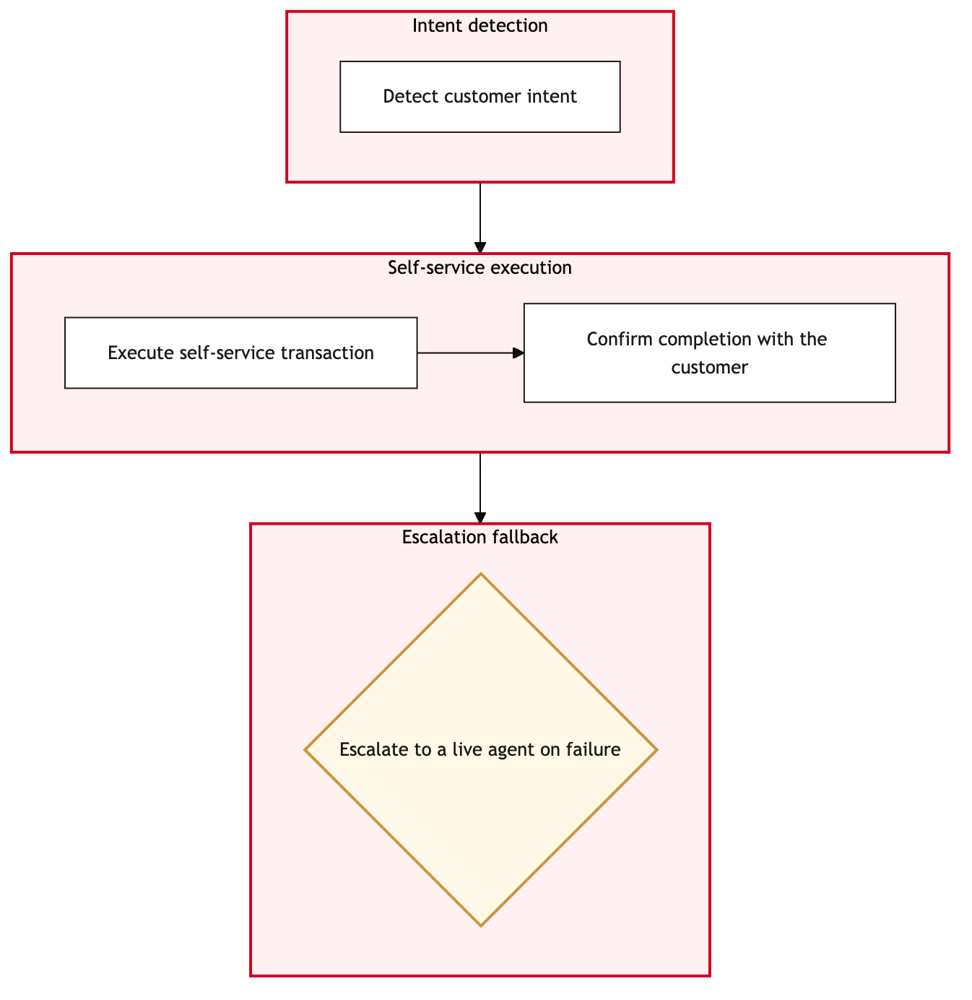

Updated 2026-08-20
IVR Routing and Self Service Containment
Process flow
Click to zoom

Process steps
▼
Phase 1 — Initial Call Reception
5 steps
| Step | Activity | Role | System | Input | Output | KPI | Dec | Exc | Pain point |
|---|---|---|---|---|---|---|---|---|---|
| 1.1 | Customer initiates call | Amazon Connect Contact Centre Agent | Amazon ConnectA | Caller ID, phone number | IVR greeting and menu options presented | Average wait time for initial response | N | N | High call volumes can lead to delays in initial greetings. |
| 1.2 | Customer selects option | Amazon Connect Contact Centre Agent | Amazon ConnectA | Menu choice from customer | IVR navigates based on selection | Success rate of IVR routing | Y | N | Incorrect menu options can lead to customer frustration. |
| 1.3 | Self-service resolution attempt | Amazon Connect Contact Centre Agent | Amazon ConnectA | Customer input for self-service | Resolution or escalation request | Percentage of calls resolved through self-service | Y | N | Complex issues may not be fully addressed by IVR. |
| 1.4 | Handle invalid option | Amazon Connect Contact Centre Agent | Amazon ConnectA | Customer input for clarification | Corrected menu selection or escalation request | Number of retries before successful navigation | Y | N | Multiple incorrect selections can increase call duration. |
| 1.5 | Escalate to agent | Amazon Connect Contact Centre Agent | Amazon ConnectA | Customer request or system error | Routing to available agent | Average wait time for agent escalation | N | N | Agent availability can impact response times. |
▼
Phase 2 — IVR Self-Service Attempt
4 steps
| Step | Activity | Role | System | Input | Output | KPI | Dec | Exc | Pain point |
|---|---|---|---|---|---|---|---|---|---|
| 2.1 | Agent receives call | Air Canada Contact Centre Agent | Salesforce Service CloudA | Call from Amazon Connect | Customer interaction begins | First contact resolution rate | Y | N | Agents must handle complex cases efficiently. |
| 2.2 | Agent gathers customer information | Air Canada Contact Centre Agent | Salesforce Service CloudA | Customer details and issue description | Updated case record in Salesforce | Accuracy of information gathered | N | N | Incorrect data entry can delay case resolution. |
| 2.3 | Agent attempts to resolve issue | Air Canada Contact Centre Agent | Salesforce Service CloudA | Case details and available solutions | Resolution or further escalation request | Issue resolution rate by agent | Y | N | Agents may need additional training for complex issues. |
| 2.4 | Document interaction in Salesforce | Air Canada Contact Centre Agent | Salesforce Service CloudA | Call transcript and resolution details | Updated case record with notes | Case documentation accuracy | N | N | Missing documentation can lead to compliance issues. |
▼
Phase 3 — Agent Routing
3 steps
| Step | Activity | Role | System | Input | Output | KPI | Dec | Exc | Pain point |
|---|---|---|---|---|---|---|---|---|---|
| 3.1 | Escalate to supervisor | Air Canada Contact Centre Supervisor | Salesforce Service CloudA | Agent's escalation request and case details | Supervisor review and decision | Average time for supervisor intervention | Y | N | Supervisors must balance workload with quality of service. |
| 3.2 | Escalate to higher management | Air Canada Contact Centre Manager | Salesforce Service CloudA | Supervisor's review and case details | Management decision and action plan | Resolution time for complex cases | Y | N | High-level decisions can be slow. |
| 3.3 | Notify customer of escalation | Air Canada Contact Centre Agent | Amazon ConnectA | Customer's phone number and reason for escalation | Notification sent to customer | Customer notification rate | N | N | Failed notifications can lead to unresolved issues. |
▼
Phase 4 — Case Documentation
4 steps
| Step | Activity | Role | System | Input | Output | KPI | Dec | Exc | Pain point |
|---|---|---|---|---|---|---|---|---|---|
| 4.1 | Open case in Salesforce | Air Canada Contact Centre Agent | Salesforce Service CloudA | Case details and resolution attempts | New case record created | Case creation rate | N | N | Overly detailed cases can slow down processing. |
| 4.2 | Assign case to specialist | Air Canada Contact Centre Manager | Salesforce Service CloudA | Case details and available specialists | Specialist assigned to case | Average time for specialist assignment | N | Y | No available specialists can delay resolution. |
| 4.3 | Escalate to external support | Air Canada Contact Centre Manager | Salesforce Service CloudA | Case details and specialist request | External support notification sent | Case escalation rate | N | Y | External support can take time to respond. |
| 4.4 | Monitor external support response | Air Canada Contact Centre Manager | Salesforce Service CloudA | External support status updates | Updated case record with support details | Response time from external support | N | Y | Delayed responses can impact customer satisfaction. |
▼
Phase 5 — Post-Call Review
5 steps
| Step | Activity | Role | System | Input | Output | KPI | Dec | Exc | Pain point |
|---|---|---|---|---|---|---|---|---|---|
| 5.1 | Review call transcript | Air Canada Contact Centre Agent | Amazon ConnectA | Call recording and notes | Transcript review completed | Transcript review accuracy | N | N | Inaccurate reviews can lead to compliance issues. |
| 5.2 | Update case status in Salesforce | Air Canada Contact Centre Agent | Salesforce Service CloudA | Review results and resolution details | Updated case record with final status | Case closure rate | N | N | Missing updates can delay internal processes. |
| 5.3 | Notify customer of resolution | Air Canada Contact Centre Agent | Amazon ConnectA | Customer's phone number and resolution details | Notification sent to customer | Customer notification rate | N | N | Failed notifications can lead to unresolved issues. |
| 5.4 | Close case in Salesforce | Air Canada Contact Centre Agent | Salesforce Service CloudA | Final status and resolution details | Case record closed | Average time to close a case | N | N | Complex cases can extend closure times. |
| 5.5 | Follow-up with customer | Air Canada Contact Centre Agent | Amazon ConnectA | Customer's phone number and follow-up plan | Follow-up interaction completed | Customer satisfaction rate from follow-ups | N | Y | Failed follow-ups can lead to complaints. |
Swim lanes
Amazon Connect Contact Centre Agent1.1 1.2 1.3 1.4 1.5
Air Canada Contact Centre Agent2.1 2.2 2.3 2.4 3.3 4.1 5.1 5.2 5.3 5.4 5.5
Air Canada Contact Centre Supervisor3.1
Air Canada Contact Centre Manager3.2 4.2 4.3 4.4
Systems touched
Amazon ConnectASalesforce Service CloudA
Key performance indicators
- Average wait time for initial response
- Success rate of IVR routing
- Percentage of calls resolved through self-service
- First contact resolution rate by agent
- Case closure rate
Risks and control points
- High call volumes leading to delays in initial greetings
- Incorrect menu options causing customer frustration
- Complex issues not fully addressed by IVR
- Agent availability impacting response times
- Supervisors balancing workload with quality of service
Air Canada Process Wiki — process and systems reference compiled from public sources
for IT Application Management and User Support pre-sales discovery.
Built 2026-08-21. Every system carries an evidence tier: tier C is an industry pattern and tier U is an open
question, and neither should be asserted as fact about Air Canada without confirmation in discovery.
Not affiliated with or endorsed by Air Canada. Air Canada, Aeroplan and Altitude are trademarks of Air Canada.